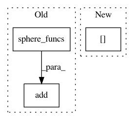

7f10447d742e5eb04aa6ef7d8a6f722828b6d68c,doc/examples/reconst_csa.py,,,#,22
Before Change
from dipy.viz import fvtk
r = fvtk.ren()
fvtk.add(r, fvtk.sphere_funcs(csamodel.fit(data_small).odf(sphere),
sphere, colormap="jet"))
print("Saving illustration as csa_odfs.png")
fvtk.record(r, n_frames=1, out_path="csa_odfs.png", size=(600, 600))
After Change
csaodfs = csamodel.fit(data_small).odf(sphere)
csaodfs = np.clip(csaodfs, 0, np.max(csaodfs, -1)[..., None])
fvtk.add(r, fvtk.sphere_funcs(csaodfs, sphere, colormap="jet"))
print("Saving illustration as csa_odfs.png")
In pattern: SUPERPATTERN
Frequency: 3
Non-data size: 3
Instances
Project Name: nipy/dipy
Commit Name: 7f10447d742e5eb04aa6ef7d8a6f722828b6d68c
Time: 2013-07-27
Author: garyfallidis@gmail.com
File Name: doc/examples/reconst_csa.py
Class Name:
Method Name:
Project Name: nipy/dipy
Commit Name: 66ec035ee81df54759c0c9a2d66d88d6cbaa2a12
Time: 2013-12-13
Author: mauro.zucchelli88@gmail.com
File Name: doc/examples/reconst_shore.py
Class Name:
Method Name:
Project Name: nipy/dipy
Commit Name: 38758de134893c5b8ec2a5ed906b436a90b6a0e4
Time: 2013-06-19
Author: garyfallidis@gmail.com
File Name: doc/examples/reconst_csd.py
Class Name:
Method Name: